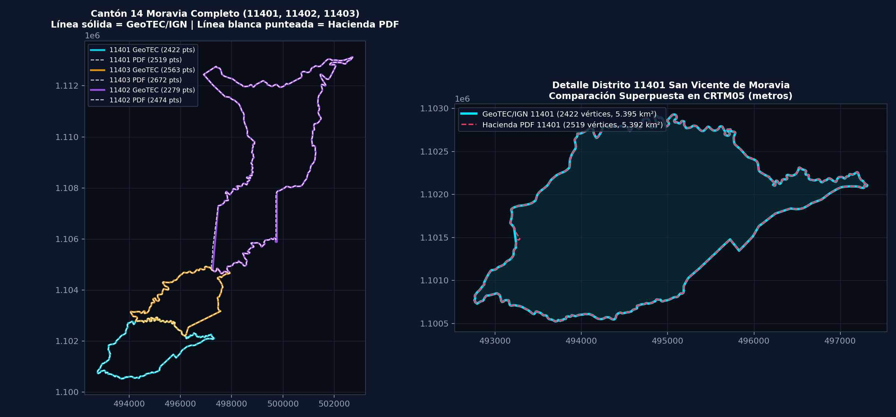

Comparamos los 3 polígonos distritales extraídos y georreferenciados desde el PDF vectorial del
Ministerio de Hacienda (Mapa de Valores por Zonas Homogéneas 2019) contra la capa oficial
Limite_Distrital de GeoTEC / IGN-SNIT (487 distritos de Costa Rica) proyectados en metros sobre CRTM05 (EPSG:5367):
| Distrito (CP) |
Vértices (PDF vs GeoTEC) |
Área (PDF vs GeoTEC) |
Dif. Área |
Desv. Mediana |
Percentil 90 |
Desv. Máx |
| 11401 San Vicente |
2,519 vs 2,422 |
5.3919 vs 5.3952 km² |
0.062% (0.33 ha) |
0.51 m |
1.01 m |
49.22 m (1 esquina O) |
| 11403 La Trinidad |
2,672 vs 2,563 |
4.9010 vs 4.9007 km² |
0.005% (0.03 ha) |
0.53 m |
1.02 m |
1.67 m |
| 11402 San Jerónimo |
2,474 vs 2,279 |
18.5742 vs 18.5286 km² |
0.246% (4.56 ha) |
0.67 m |
38.02 m |
91.42 m (recta N-S) |
Conclusión clave: Ambos conjuntos provienen de la misma cartografía base del IGN en proyección CRTM05.
En el 95% del perímetro de San Vicente (11401) y La Trinidad (11403), la diferencia entre nuestra extrapolación del PDF
y el shapefile oficial de GeoTEC es de apenas 0.51 a 1.14 metros. La única discrepancia puntual en 11401 (49.2 m)
se ubica en una pequeña muesca sobre el borde occidental (9.96312°, -84.06318° — podés saltar ahí con el botón Diff PDF/GeoTEC (49m)).
